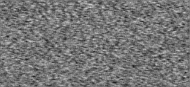

My recent research interests include Noncoherent communication, Channel-coded Communication Systems, Cooperative Communication, Large-scale MIMO System, Non-orthogonal Multiple Access, and Biometrics.
The detailed publication list can be found in the following page : http://mx.nthu.edu.tw/~ymchen/publications.htm
The main contributions in some of the topics are described in the following.
1. Noncoherent communication:
In wireless links, the variation of channel environments can be explicitly modeled by time-varying amplitudes and carrier phase rotations of channel coefficients. For systems with unknown channel coefficients to both the transmitter and the receiver, non-coherent detection is an attractive technique, since it does not require the channel estimation procedures. However, the noncoherent detection methods provided in literature usually suffer from high computational complexities, most of which are exponentially proportional to the number of conveyed information bits. To overcome this major drawback of noncoherent detection, we firstly focused on the design of low-complexity noncoherent detectors. Noncoherent detectors with very low detection complexities were proposed respectively for both the single-input single-output (SISO) and the multiple-input multiple-output (MIMO) noncoherent communication schemes, with only limited losses in bit-error-rate performances.
Secondly, coded centralized/distributed MIMO schemes for non-coherent fast fading channels, where neither the transmitter nor the receiver knows the channel state information, were proposed. The coded bits are transmitted through either unitary space-time modulation (USTM) or spatial multiplexing (SM). Since this approach effectively increases the cardinality of the set of possible transmit (space-time) signal matrices, a large rate gain can be obtained without increasing the modulation order, as shown through achievable-rate analysis. At the receiver, an iterative detection-decoding algorithm is executed cooperatively among the decoder, the coherent detector used for SM, and the non-coherent detector used for USTM. Compared to the scheme described in the literature, the proposed scheme, in some cases, can provide better error performance with lower complexity.
Lastly, in the recently published research results, we used high-order modulation signals to construct coded non-coherent transmission schemes. Considering amplitude/phase modulated signals, the theoretical analyses of bit error rates were investigated, and the design criteria for the noncoherent signal constellations as well as the bit labeling rules were derived for both the Rayleigh block fading channels and the correlated Rayleigh fading channels, respectively. We also optimized the system parameters such that near-capacity performances can be achieved for both channels.
2. Channel-coded communication systems:
In the research field of channel-coded communication systems, we firstly proposed a method that can be used to approach the capacity limit for channels with fast phase variation by using a serial concatenation scheme with an outer channel encoder and an inner block modulator. A distinct feature of the proposed transmission scheme is that coded symbols from adjacent codewords are interleaved into the same input vectors of the block modulator. It was shown that near-capacity performances can be achieved using the proposed concatenated schemes. On the other hand, when considering convolutional codes as the outer channel codes, design criteria for the generator polynomials of the convolutional codes were also derived through the bit-error-rate analysis of the entire coded system.
Secondly, it is known that low-density parity-check (LDPC) codes are widely used to provide capacity-approaching performances in various transmission systems. For the design of LDPC-coded transmission schemes, the extrinsic information transfer (EXIT) chart is a commonly used tool for the performance optimization. However, the Gaussian assumption for soft messages in conventional EXIT-chart-based optimization algorithms result in prediction gaps in the decoding threshold for certain transmission systems. Consequently, we propose an EXIT-chart-based optimization method, in which all the Gaussian assumptions for soft messages can be avoided. Compared to the conventional design methods, the proposed method provides a more accurate threshold prediction and can be used to designed LDPC-coded schemes with better error performances.
Lastly, efficient scheduling methods for the decoding algorithm of LDPC-like channel codes were also proposed to improve the converged decoding threshold and enhance the throughput performance of the coded schemes. Moreover, considering noncoherent distributed space-time modulations, code design algorithms for the outer Raptor codes were investigated in the recent research results.
3. Cooperative communication and large-scale MIMO system:
Firstly, several full-duplex cooperative coherent communication systems for Rayleigh fading channels using rateless codes were investigated based on the decode-and-forward (DF), the compress-and-forward (CF), and the adaptive CF/DF (ACDF) relaying protocols. Secondly, we also proposed two Raptor-coded noncoherent cooperative schemes based on distributed unitary space-time modulation schemes. Considering a wireless relay network with one source node, one destination node, and multiple relay nodes, not only the noncoherent distributed space-time signal sets were designed, but also the relaying protocols were investigated. In addition, aiming at enhancing the convergence speed and the data throughput, a joint code search and signal design algorithm is investigated for the proposed noncoherent cooperative schemes. The related research works are supported by the Ministry of Science and Technology of Taiwan under Grants MOST 104-2218-E-110-012-MY2
Secondly, we have proposed a coded low-complexity massive MIMO scheme considering the generalized spatial modulation in large-scale MIMO systems. Reductions in detection complexity of 99.46% can be achieved when compared to the scheme which uses the ML detector, when considering the 16QAM signal. Moreover, an LDPC-coded GSM scheme that uses the designed CASD detector has been constructed. The variable-node degree distributions of suitable LDPC codes have been designed in order to achieve an error performance which is very close to that of the scheme using the conventional MAP detector, but with a much lower complexity level.
Lastly, a cooperative single-carrier transmission scheme, which considers a distributed quasi-orthogonal space-frequency block code (QOSFBC) that provides improved peak-to-average power ratio (PAPR) values, is constructed for uplink communications. Aiming at reducing the size and computational complexity, the source node is equipped with two transmit antennas, while only one antenna is equipped at the relay node to collaboratively generate a distributed QOSFBC signal with four transmit antennas. To achieve full diversity, a phase rotation strategy is adopted at the relay node. In addition, since single-carrier schemes which consider SFBCs re-permute the spectral elements of the transmitted signals and induce high PAPR values, a modified SFBC coding strategy is proposed to mitigate the high-PAPR problem. Consequently, the constructed distributed single-carrier frequency-division multiple access (SC-FDMA) QOSFBC scheme is capable of providing full transmit diversity over frequency-selective fading channels, with a much lower PAPR value on mobile devices when compared to a conventional SC-FDMA QOSFBC scheme.
NON-ORTHOGONAL MULTI-ACCESS

在4G時代，通訊系統多數採用正交系列的技術應用，如: 分碼多重接取（Code Division Multiple Access，CDMA），正交頻多重接取（Orthogonal Frequency Division Multiple Access，OFDMA）...
NON-ORTHOGONAL MULTI-ACCESS
NOMA被認為是5G和Beyond 5G有力的候選方案，而與傳統的OMA方案相反，NOMA的主要區別特徵是在非正交(Non-Orthogonal)資源分配的輔助下，與正交(Orthogonal)資源相比，它支援的用戶數更多，而此技術會通過消除用戶間複雜的干擾來實現支援更多的用戶數，但也因此增加接收機的複雜度為代價。
而在傳統的4G網絡中，正交頻分多址（OFDMA）作為OFDM自然延伸的技術，其中將每個用戶的信息分配給子載波的子集。另外在NOMA中，每個用戶都可以使用所有子載波。現今因為進階多媒體應用（例如，超高清視頻，虛擬實境(VR)等）所需的無線網路速度迅速提升，以及物聯網（IoT）所要求的用戶訪問需求急劇增長，第五代（5G）網絡在支持大規模數據流量方面面臨挑戰。而非正交多址（NOMA）是第三代合作夥伴計劃長期演進（3GPP-LTE-A）所提出的一種有發展性的技術。現有的NOMA依賴於 power-domain 或 code-domain 的復用(multiplexing)，因此能夠借助非正交資源共享來提高頻譜效率。而且，NOMA這個技術能夠在等級不足(rank-deficient)的情況下運行，從而有助於支持大規模連接，所以NOMA被認為是一個非常有潛力的5G候選方案。
在code-domain上，NOMA的相關技術有低密度簽記(LDS)、疏碼多工存取(SCMA)、模式多重接取(PDMA)，低密度簽記是一種低密度版本的CDMA。使得我們可以用可行複雜度的接收機來達到近似MAP的性能。而SCMA則是希望改善LDS的錯誤率性能，同時保留低密度的特性使得一樣能合理使用近似MAP性能的接收機。跟LDS步驟最大的不同在於位元轉換成星座符元的映射以及擴展成會合併在一起的SCMA碼本映射。所以位元會透過SCMA碼本轉換成多維度的碼字。每個用戶會有自己專門的碼本，所以SCMA可以想成是一個二進位維度變成多維的複數維度編碼流程。與CDMA相比，多維度碼字調變技術的星座成型增益(constellation shaping gain)是主要優勢所在。
而在power-domain上，NOMA的分集增益(diversity gain)主要源自於傳輸訊號在power-domain上的功率疊加，已經有許多研究結果(例如，outage probability、achievable capacity、weak users’ rate guarantees、 cell-edge user experiences)顯示有利於NOMA。
此外，在傳送端完美的SC、在接收端的零錯誤SIC、最佳化功率分配、面向QoS使用者保障、適當的用戶配對以及良好的鏈路適應性，皆可為NOMA提供最大的優勢。
本實驗室長期以來在頻譜利用效率的通訊研究上已有相當成果，目前的研究方向著重在疏碼多工存取(SCMA)的相關技術，透過AI來尋找更好的SCMA碼本來達成錯誤率下降。歡迎有興趣的新生加入本研究群的行列！
ERROR-CORRECTING CODE

在現今的社會中，通訊技術實現在人們的日常生活，大家都想正確的將訊息傳達給遠處的人。但是在現實中往往會因為自然環境產生的干擾或電子零件產生的雜訊，使得資料傳輸時產生失真，讓接收到的資料產生錯誤...
ERROR-CORRECTING CODE
在現今的社會中，通訊技術實現在人們的日常生活，大家都想正確的將訊息傳達給遠處的人。但是在現實中往往會因為自然環境產生的干擾或電子零件產生的雜訊，使得資料傳輸時產生失真，讓接收到的資料產生錯誤，這時候如果有方法可以將收到的錯誤資訊還原回正確的資料，就可以避免不可靠的通訊。
學者Claude Shannon在所建構的消息理論中昭示，只要符合通道的特定條件，就可能使得訊息傳輸發生錯誤的機率達到任意小，同時還告訴我們在特定的通道環境假設下，錯誤效能的極限在哪裡，從此之後，使得通訊系統的研究進入一個新的階段，有眾多科學家研究他的理論，並促使錯誤更正碼(Error Correcting Code)的研究領域蓬勃發展。
為了克服通道環境引起的傳輸錯誤而加諸於傳送訊息的編碼方法，是使用錯誤更正碼（Error Correcting Coding)在傳送訊息中加入冗餘（Redundancy）位元，讓接收端的解碼器能經由所設計的編碼架構去偵測並更正傳輸錯誤，因此在同一訊號雜訊比時，位元錯誤率會降低，但也會導致整體傳輸位元數增加，而使得傳輸速率降低，設計時須同時考慮這兩個因素。
本實驗室目前所專注之編碼研究為低密度奇偶檢查碼(Low density parity check code)和極化碼(Polar code) 在近年Polar Code 已被3GPP納入Control Channel的5G標準當中，Polar Code是本實驗室錯誤更正碼方向上所著重的研究題目之一。歡迎對5G前瞻行動通訊技術有興趣的新生加入我們的研究團隊！
BIOMETRICS

生物辨識是現今世代先進的身分認證系統。生物辨識系統較一般密碼輸入系統還要快速以及安全。其優點建立在生物特徵不會像密碼一樣被忘記，也難以被竊取盜用，配合上錯誤更正碼技術(ECC)以及雜湊函數(Hash function)...
Biometric
虹膜影像可以在需要搜索非常大的資料庫時，不造成錯誤的情況下成功進行身分認證，其在現今的生物辨識技術上已經成為一種吸引人且可靠的身分辨識替代方案。虹膜在數學分析上具有巨大的優勢，它的關鍵在於不同人之間的虹膜特徵碼差異很大。此外，虹膜作為眼睛的內部器官，受到了良好的保護，不受環境的影響，並且隨著時間推移仍然能夠保持穩定不變。並且，眼睛在臉部定位的便利性以及虹膜獨特的環形形狀，有助於可靠、精確地分割出此特徵並創建尺度不變的呈現形式。
虹膜在胚胎著床後的第三個月開始形成，而形成虹膜的結構在第八個月已基本完成，而色素的積聚時間可以持續到出生後的前幾年。虹膜的複雜紋理可以包含許多獨特的特徵，例如弓形韌帶狀、犁溝狀、山脊狀、隱窩狀、環狀、電暈狀，雀斑狀等等。這些基質特徵在可見光下形成主要紋理，並且在用於近距離成像的近紅外線（Near-infrared, NIR）波長的使用下構成了虹膜影像。在近紅外波長下，即使是深色的虹膜也可以顯示出豐富而複雜的特徵。
包括英國電信、桑迪亞實驗室、英國國家物理實驗室、松下、LG、Oki、 EyeTicket、Sensa、Sarnoff、IBM、SchipholGroup、西門子、薩基姆、IriScan 和 Iridian。這些研究機構提出的編碼及虹膜辨識的演算法，在測試組織的報告中都顯示出其錯誤匹配率為0%，其中一些涉及數百萬個虹膜配對。
由於虹膜的相位碼中任何的位元擁有均等的機率為1或0，並且不同的虹膜高度不相關，因此兩個不同的虹膜特徵碼之間的漢名距離(Hamming Distance, HD)的預期比例為 HD = 0.500。這些配對的分布在觀察下發現漢名距離的平均為 𝑝 = 0.499; 標準差為 𝜎 = 0.0317，而這個分布明顯對應於擁有自由度(degrees-of-freedom)𝑁= 𝑝(1 − 𝑝)/𝜎2 = 249的二項式分布(binomial)。二項式分布的理論線與實驗觀察到的分佈如此接近的原因，是兩個不同虹膜的相位碼位之間的每個比較，本質上就是一次伯努利試驗 (Bernoulli trial)，因此連續的“拋硬幣(coin tosses)”理論上就會形成二項式分布。
在任何給定的虹膜特徵碼中，由於虹膜內存在內部相關性，實際上只有很小的位元集相互獨立。一個有相關的多個伯努利試驗還是會保持二項式分布，不過會伴隨著𝑁(有效的擲骰子次數)的減少以及漢名距離分布的標準差𝜎的增加。分別使用11 和5 mm作為典型虹膜和瞳孔的直徑的情況下，觀察到的不同虹膜紋理圖案之間的統計變化量可以對應到虹膜上約3.2 bit/mm的信息密度。這是虹膜在生物辨識中的一個優勢，相較於指紋辨識、臉部辨識等等，虹膜具有最多特徵點，能在生物辨識技術中提供更高的準確度。
本實驗室長期以來在虹膜辨識與資訊安全的研究上已有相當成果，目前的研究方向著重在結合深度學習的相關技術，進行高資訊安全高檢測率高辨識效能虹膜辨識架構設計。歡迎有興趣的新生加入本研究群的行列！
Noncoherent Detection
_resized.jpg)
在一般的通訊系統的設計，常常基於通道資訊在接收端完美已知的假設之下進行討論，或假設通道估計可完美的進行。然而，在現實的無線通道環境中，傳送端與接收端的移動性(mobility)...
在一般的通訊系統的設計，常常基於通道資訊在接收端完美已知的假設之下進行討論，或假設通道估計可完美的進行。然而，在現實的無線通道環境中，傳送端與接收端的移動性(mobility)，相位同步問題，以及其它可能的因素常會導致未知且時變的衰退通道。尤其在通道變化快速的形況下，接收端往往難以做到精確的通道估計。
通道估計問題在許多情況下將特別難以實現。例如在分散式多輸入多輸出系統中，為了形成一個虛擬天線陣列，我們必須將傳送資訊可靠的傳遞到每個中繼端點，這暗示了精確通道估計必須在每個中繼端點（虛擬傳送天線）上被實現。在快速衰退通道下，我們需要使用相當多的嚮導信號（pilot symbol）來達到精確通道估計的效果。如此一來將導致頻寬和傳送能量上的浪費，然而，這兩項卻恰恰是在行動裝置上十分珍貴的資源。另外，在現今5G的候選技術中，大規模多天線(Massive MIMO)系統是一個相當受矚目的技術，預計可顯著的提升系統吞吐量與傳輸可靠度。然而，在一個大規模多天線系統中，由於通道鏈結為數眾多，花費在通道估測上所需嚮導訊號將造成大量能量與頻寬上的浪費。因此，通道估測實行上的困難成為大規模多天線系統實現上所將面對的一個重要議題。
因此，為了解決複雜的通道估測問題，非同調(Noncoherent)通訊架構，即，在傳送端與接收端都不需要通道資訊的假設下的系統，是一個可能的解決方案。
透過非同調訊號與相對應接收機的設計，接收端不需進行通道估測，依然可以進行訊號解調。然而，在MIMO環境下，當傳送天線的數量增加，非同調架構的設計依然面臨兩個極具挑戰性的難題：第一個問題是在文獻中提到，在非同調區塊衰退通道下，為了達到全分集(full diversity)，所設計的訊號矩陣時間長度須為傳送天線的兩倍。如此一來若考慮大規模的傳送天線數量，將與基於通道估測的系統相似，遭受較長的訊號延遲與頻寬效益上的浪費。另一個問題是，傳統非同調訊號的設計通常不具有良好的結構性，且使用最大相似性（maximum likelihood, ML）偵測器來進行訊號解調。在考慮較長的訊號矩陣時間長度且較高的調變率(modulation rate)的情形下，使用最大相似性偵測器將帶來極高的解調複雜度。因此，以上兩個議題將是非同調大規模多天線系統設計上極具挑戰性的難題。
本實驗室長期以來在非同調通訊的研究上已有相當成果，目前的研究方向著重在結合壓縮感知 (compressed sensing)的相關技術，進行低複雜度非同調大規模多天線編碼傳輸架構設計。歡迎有興趣的新生加入本研究群的行列！
5G - NR
現代通訊技術日新月異，從以往我們所熟知的3G-WCDMA，4G-LTE，到現在正在準備商轉的新一代無線通訊5G-NR。3GPP一直積極制定關於5G的相關通訊協定，而Release 15(2018)的大致底定...
5G - NR
現代通訊技術日新月異，從以往我們所熟知的3G-WCDMA，4G-LTE，到現在正在準備商轉的新一代無線通訊5G-NR。3GPP一直積極制定關於5G的相關通訊協定，而Release 15(2018)的大致底定，象徵著新一代無線通訊世代的來臨。
5G-NR(New Radio)將帶動新一代的通訊相關產業的發展，包含各國規劃的智慧城市、物聯網的技術、AI、生物辨識、健康照護…等方向，而這一切都是因為5G擁有更高的吞吐量、更低的延遲性和更高的頻寬效益才有辦法做到。。
無線通訊一直都是一個熱門且困難的研究主題，從雜訊、通道衰減、多重路徑效應，path-loss…等種種因素，在在影響一個通訊系統的品質。而在5G mm-Wave的傳輸中，path-loss 和shadowing更是急切突破的要素，另一方面，5G與3G(WCDMA) / 4G(LTE)系統間的相容性也是需要研究的。除此之外，5G還需要滿足一些新的需求，例如因應物聯網相關技術的資料量遽增和連接裝置的大幅增加，無人駕駛的低延遲速率…等。
5G-NR採用512-QAM或1024-QAM更高的資料壓縮密度調變/解調變器，目前4G使用256-QAM或64-QAM的調變以傳輸資料，因此頻譜效率將大幅提升。預期速率：上行(Uplink)為1Gbps，下行(Downlink)為10Gbps，延遲時間(delay)低於2ms。為了擁有更高的吞吐量，除了mm-Wave的相關研究之外，也將帶動許多通訊技術的蓬勃發展。例如利用天線增益來達成更高效能的Massive MIMO技術，在同一個resource上疊加多使用者資訊的NOMA技術，更高錯誤更正能力的現代錯誤更正碼技術…等等通訊技術將相繼成為不僅是學界甚至是業界的熱門研究題目。
MACHINE LEARNING
2014年，由 Ian Goodfellow 所發表的生成對抗網路(Generative Adversarial Network, GAN)是非監督式學習的一種方法。他改善了以往Autoencoder等監督式學習類型的網路，缺乏大局觀的缺點...
MACHINE LEARNING
2014年，由 Ian Goodfellow 所發表的生成對抗網路(Generative Adversarial Network, GAN)是非監督式學習的一種方法。他改善了以往Autoencoder等監督式學習類型的網路，缺乏大局觀的缺點，監督式學習類型的網路是以像素學習的方式來讓生成的圖片趨近正確，這會造成生成的圖片不夠具有整體性。GAN改變了以往生成圖片的大架構，他拋棄傳統的損失函數算法，創造了一種雙網路對抗疊代的學習架構，因而獲得絕佳的生成圖片成果，並獲得學界大量關注。
這種方法主要由兩個的神經網路模型所組成，一個模型稱做生成神經網路(Generator)，一個稱做判別神經網路(Discriminator)。其中，生成神經網路的主要任務，是要透過隨機採樣隨機變量來輸出結果，該輸出結果必須要盡量靠近訓練集資料的真實樣本；判別神經網路則是分別將真實訓練集資料與生成神經網路所模擬製造出的資料輸入進行比對。
生成神經網路負責模擬生產出很靠近真實資料的資料，交由判別神經網路與真實資料進行比對。透過生成神經網路盡全力欺騙判別神經網路，判別網路盡全力辨認出真假資料，兩個網路相互對抗、不斷調整各自網路參數的平衡結果成為模型學習成果，國外最常的舉例就是，假鈔跟驗證假鈔，生成神經網路是負責做假鈔的人，判別神經網路是檢驗是否為假鈔的人 ; 或者說，也可以把它看成為學生跟老師的關係。最終得到的生成神經網路，常被用於模擬以假亂真的圖片、影像與物體等 ; 而判別神經網路則可用於辨識或分類。另外，GAN也有需多應用之處: 生成影像數據集、生成人臉照片、生成照片或是動漫人物、影像轉換(把草稿轉換成照片、把衛星照片轉換Google地圖的圖片、把照片轉換成油畫、把白天轉換成黑夜)、文字到影像的轉換、自動生成模特、透過人臉照片自動生成對應的表情、提高照片解析度以及照片修復等等。
另一方面，循環生成對抗網路（Cycle Generative Adversarial Network, CycleGAN）是GAN的其中一個延伸技術，是由Jun-Yan Zhu等人於2017 年3月份提出的生成對抗模型。該模型的作用是將一類圖片轉換成另外一類圖片。具體來講，有𝑋和Y兩個圖像域(比如馬和斑馬)，循環生成對抗網路能夠將圖像域𝑋的圖像(馬)轉換為圖像域 Y 的圖像(斑馬) ，或者是將圖像域 Y 的圖像(斑馬)轉換為圖像域𝑋的圖像(馬)。循環生成對抗網路是功能強大的計算機算法，其最大的創新在於能夠利用非成對數據（unpaired data）進行訓練。比如，我們希望訓練一個將白天的照片轉換為夜晚的模型。如果使用pix2pix模型，那麼我們必須在蒐集大量地點在白天和夜晚的兩張對應圖片，而使用循環生成對抗網路只需同時蒐集白天的圖片和夜晚的圖片，不必滿足對應關係。因此，循環生成對抗網路的拓展性更好，應用更加廣泛。
循環生成對抗網路有許多有趣的應用。包括: 風格轉換、物體變形、季節轉換、使用繪畫生成照片。此外，除了照片增強功能，還有音樂流派轉移以及語音轉換等等應用。 本實驗室目前的研究方向著重在通訊、虹膜辨識各方面與深度學習技術的結合，進行學習模型架構的改善已順利應用於原系統當中。歡迎有興趣的新生加入本研究群的行列！